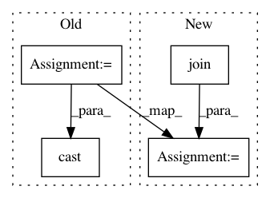

624398882bfe85312060dfe4103b905632457cff,src/python/pants/pantsd/pants_daemon.py,PantsDaemon,_pantsd_logging,#PantsDaemon#,332
Before Change
// is launched with full_init=True. If PantsdDaemon is launched with
// full_init=True, we can guarantee self._native is non-None.
native = cast(Native, self._native)
log_handler = setup_logging(
self._log_level,
native=native,
log_dir=self._log_dir,
log_filename=self.LOG_NAME,
warnings_filter_regexes=self._bootstrap_options.for_global_scope(), // type: ignore[union-attr]
)
// We know log_handler is never None because we did pass a non-None `log_dir`
// to setup_logging.
log_handler = cast(NativeHandler, log_handler)
native.override_thread_logging_destination_to_just_pantsd()
// Do a python-level redirect of stdout/stderr, which will not disturb `0,1,2`.
// TODO: Consider giving these pipes/actual fds, in order to make them "deep" replacements
After Change
ignores = bootstrap_options.for_global_scope().ignore_pants_warnings
clear_previous_loggers()
setup_logging_to_stderr(level, warnings_filter_regexes=ignores)
log_dir = os.path.join(self._work_dir, self.name)
log_handler = setup_logging_to_file(
level, log_dir=log_dir, log_filename=self.LOG_NAME, warnings_filter_regexes=ignores
)
native.override_thread_logging_destination_to_just_pantsd()
// Do a python-level redirect of stdout/stderr, which will not disturb `0,1,2`.
In pattern: SUPERPATTERN
Frequency: 3
Non-data size: 4
Instances
Project Name: pantsbuild/pants
Commit Name: 624398882bfe85312060dfe4103b905632457cff
Time: 2020-04-20
Author: greg.shuflin@toolchain.com
File Name: src/python/pants/pantsd/pants_daemon.py
Class Name: PantsDaemon
Method Name: _pantsd_logging
Project Name: Theano/Theano
Commit Name: d9a66a7d08418ae1719358b2e3452f5c1478ca5d
Time: 2016-09-21
Author: gvtulder@gmail.com
File Name: theano/sandbox/cuda/opt_util.py
Class Name:
Method Name: pad_dims
Project Name: Theano/Theano
Commit Name: d9a66a7d08418ae1719358b2e3452f5c1478ca5d
Time: 2016-09-21
Author: gvtulder@gmail.com
File Name: theano/gpuarray/opt_util.py
Class Name:
Method Name: pad_dims